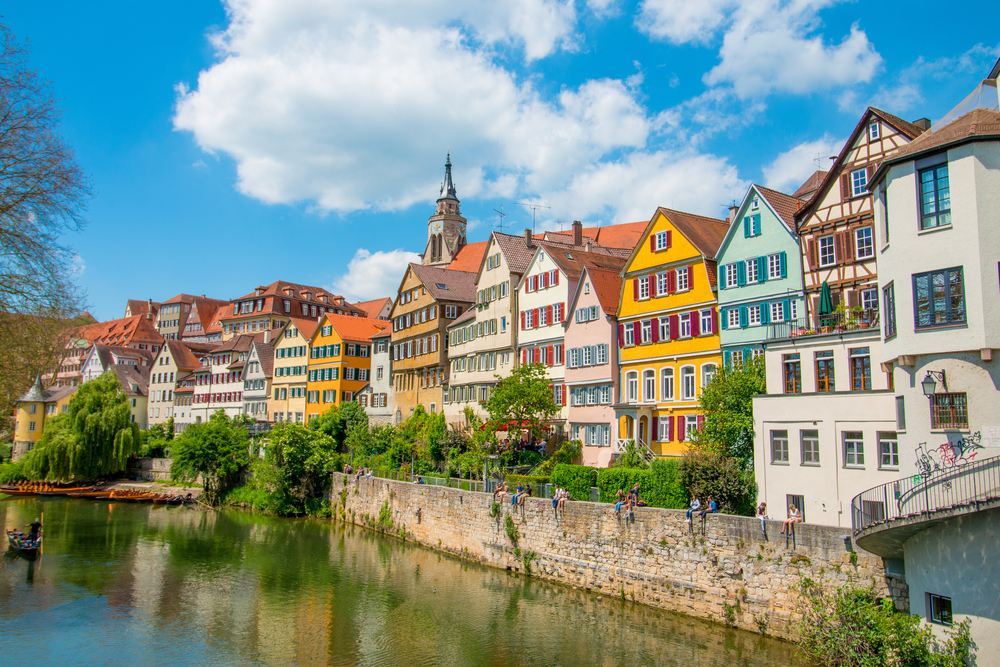
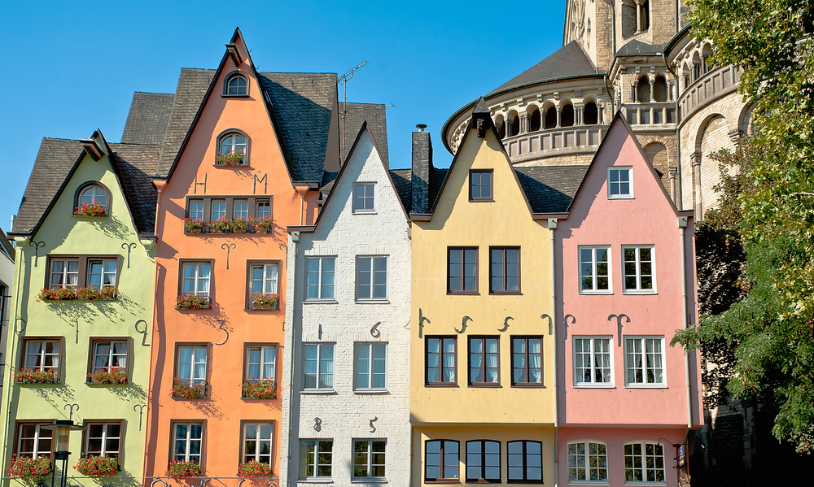

История немецкого языка
Этот сайт был создан для тех, кому стала интересна это тема.
Здесь вы можете более подробно узнать об истории немецкого языка
Здесь вы можете более подробно узнать об истории немецкого языка
Немецкий язык – Deutsche Sprache или Deutsch – официальный язык немецкой и австрийской нации, а также на нем говорят на территории Швейцарии, Лихтенштейна, Австрии.
Он также является одним их официальных языков Люксембурга, Бельгии и Швейцарии. Немецкий язык входит в германскую ветвь индоевропейских языков. Формирование общенационального литературного немецкого языка происходило на протяжении многих столетий и неразрывно связано с историей немецкого народа, его носителя.
Мы изучаем немецкий язык со 2 класса и мне всегда хотелось узнать, как можно больше о нём. Эти факты и стали причиной моего интереса к данной теме. На уроках мы знакомимся с менталитетом жителей страны изучаемого языка, с культурой, традициями и обычаями немецкого народа, с архитектурой городов Германии, Австрии, Швейцарии и так далее. Но не рассматривали самое интересное – историю происхождения немецкого языка. Поэтому в этом проекте мы познакомимся с историей немецкого языка более детально.
История происхождения немецкого языка.
Основу письменности языка составляет латинский алфавит. В период до
начала ХХ столетия официальным шрифтом немецкого языка являлся
готический шрифт. В общепринятом нынешнем начертании шрифт появился,
хотя и неофициально, с XIX столетия, ввели его в использование только в
1918 году, поле того, как произошла победа Ноябрьской революции. Во
время Второй Мировой войны нацисты предпринимали попытки вновь
ввести в обращение готический шрифт, но у них ничего не вышло. Сейчас
тоже используется готический шрифт, но уже как элемент декора.
Литературный немецкий язык был сформирован из верхне-южно-
немецких и верхне-средненемецких диалектов. Во времена Средневековья произошло второе передвижение согласных. Позже литературный немецкий язык повлиял на нижнее-северо-немецкие диалекты, которых изменение смычных согласных не коснулось.
Основой официального немецкого литературного языка в
немецкоговорящих странах является диалект столицы Германии. На
сегодняшний день стандартный немецкий язык – это симбиоз
верхненемецких и средненемецких диалектов, и только в городе Ганновере
немецкий литературный язык остался неизменным на протяжении многих
столетий.
Литературный немецкий очень сильно отличался от нижненемецкого
диалекта и из-за этого применять их вместе не представлялось возможным. Сейчас жители Северной Германии почти не употребляют нижненемецкий диалект, а говорят на немецком литературном языке. А вот в центральной и южной части страны сохранились местные диалекты, так как они походили на литературный немецкий язык.
Историю немецкого языка разделяют на четыре периода. Первый период - старый литературный немецкий язык – длился с 750 по 1050 год. Второй – средний литературный немецкий язык – с 1050 по 1350 год. Третий период – ранний новый литературный язык – длился с 1350 по 1650 год. А с 1650 года начался четвертый период современный литературный немецкий язык, который длится по настоящее время.
.

